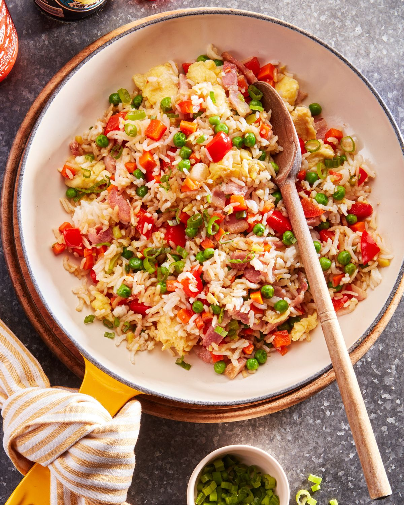

Fried Rice

Description
One of my all-time favorite comfort foods is fried rice.
Whenever I make white rice, I make extra,
just so I can have the leftovers for fried rice.
Plain cooked rice is tasty enough,
but when it's fried the grains get all crispy and seared.
Ingridients
- 2 tbsp. canola oil
- 2 large eggs, beaten
- 3 slices bacon, diced
- 1/2 red bell pepper, diced
- 3 scallions or green onions, chopped, whites and green separated
- 2 medium or 3 small carrots, diced
- 3 garlic cloves, minced
- 1 tbsp. minced fresh ginger
- 1/2 c. frozen peas, defrosted
- 4 c. cold rice
- 3 tbsp. low sodium soy sauce
- 1 tbsp. sesame oil, plus more to taste
Steps
- Heat canola oil in a large skillet over medium heat.
Add eggs and cook, stirring,
until curds are light and fluffy, 2 to 3 minutes,
transfer to a plate.
Add bacon to skillet and cook until crisp,
5 to 6 minutes.
- Add pepper, scallion whites, and carrots,
and cook, stirring occasionally, until soft,
5 to 6 minutes. Add garlic and ginger and cook
until fragrant, 1 to 2 minutes.
- Reduce heat to medium-low and add peas and rice.
Cook, stirring occasionally, until warmed through,
4 to 5 minutes. Fold in eggs and season with
soy sauce and sesame oil.
Serve immediately topped with scallion greens
and more sesame oil alongside.